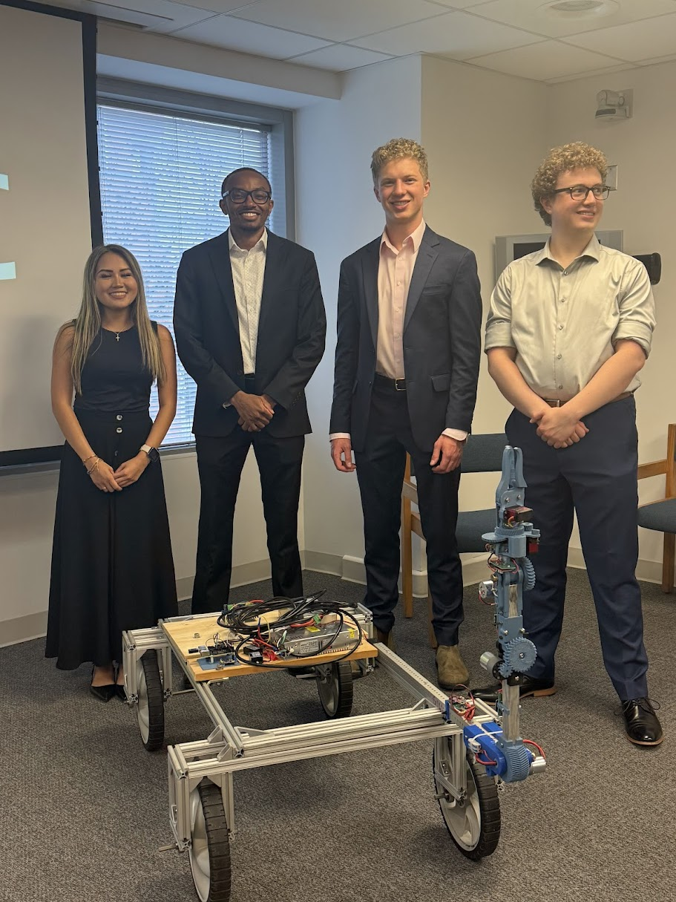

Jesse Gill Saligman
7-DOF Robotic Arm
Drexel Senior Design Project | 2025
Overview
Inspired by NASA’s RASC-AL challenge, my senior design team created a lunar maintenance rover with a modular advanced manipulator, a custom chassis, and distributed control — built for adaptability, repairability, and upgradeability.
More Info
The project was a test platform for modularity, control, and systems integration — not a hardened lunar system. Every element was designed with modularity in mind: only four wires (HV+/–, LV+/–) run from the chassis to the arm, distributing power to each joint’s independent controller. This minimized wiring complexity and enabled hot-swapping of components.
Project Highlights

I was team leader and led all mechanical, electrical, coding, prototyping, and testing work. The rest of the team focused on documentation and outreach, while I built and integrated the actual hardware and software systems.
More Info
The concept was inspired by RASC-AL’s call for long-term lunar servicing platforms. The arm’s modularity allows for easy upgrades and repairs. We decided to use ROS 2 to support autonomy and communication structure, and I built the entire stack to simulate real-world deployment.
Mechanical Design

We started by analyzing different joint layouts to minimize singularities. I calculated all forces, moments, and required torques based on a desired payload and arm reach. Then, I designed and rapidly prototyped each joint one by one.
More Info
The arm’s structure is built around a 1” x 1” aluminum tube spine, with each joint 3D-printed using PLA, PETG, or ABS depending on stress requirements. I originally designed a 3D-printed harmonic drive to increase torque and reduce backlash, but it was cut due to time. We intended to build all 6 joints and a gripper, but completed J3–J6 + gripper before the deadline.

Special Note on J6 + Gripper

J6 was an axial joint — we needed >270° rotation, so I geared the potentiometer to achieve ~600° range, using axial thrust bearings and radial bearings. The joint is hollow for wire passthrough to the servo-powered gripper.
Electronics

Each joint has its own microcontroller, powered by a shared 4-wire snake (HV+/– and LV+/–). Joints can be added or removed with no changes — they just tap into power and Wi-Fi.
Joint Electronics

Each joint contains an ESP8266, a potentiometer, a motor driver, and a gearmotor. It receives a target angle or velocity, performs PID control, and reports its position via MQTT.
Chassis Electronics

The base includes 12V/24V supplies, buck converters, fuse protection, and a Raspberry Pi for control. These hobbyist-grade components were easy to debug and repair.
Software & Control

The robot uses a distributed system: a Raspberry Pi hosts the Wi-Fi and sends MQTT commands to each joint. The Pi supports both velocity and position control modes.
More Info
The Pi runs hostapd, dnsmasq, and mosquitto to create a Wi-Fi network. You SSH in and start a control script. Xbox controllers can drive the robot in velocity mode, or you can use terminal commands in position mode.
Communication Protocol

Messages use a consistent bracket format: [DR, DL, J3, J4, J5, J6, G]. The system distinguishes controller input (velocities), desired targets (positions), and actual angles (feedback).
ESP Logic

Each ESP joins Wi-Fi, listens for its command, executes it with PID, and returns its angle to the Pi.
More Info
Supports both 'P45.0' for position and 'V0.6' for velocity. Also includes soft stops to prevent out-of-bounds behavior.
Prototyping & Assembly
Since joints are modular, each was built, flashed, tuned, and tested independently — avoiding integration issues. We worked from gripper backward to J3.
More Info
The software could run with any number of joints. Internal routing and quick-swap mounting allowed for rapid hardware iteration.
Takeaways & Future Work
LuMAR is now a Drexel teaching tool. I wrote full documentation for future teams to expand the system.
More Info
Future work includes: adding J1/J2, improving drivetrain, developing new end-effectors, and extending ROS 2 autonomy.